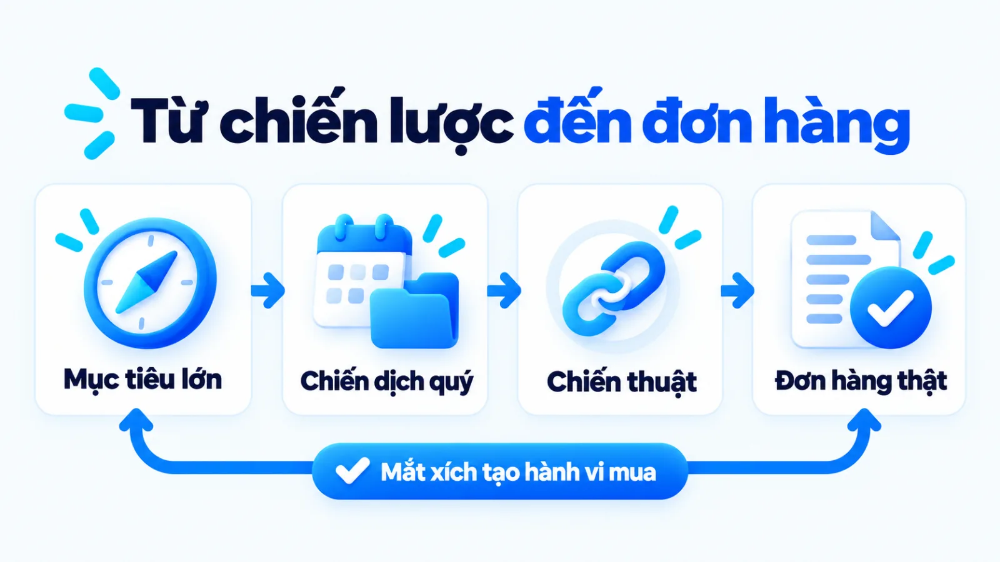
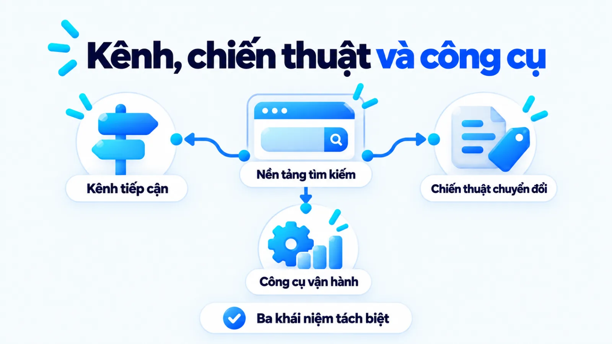
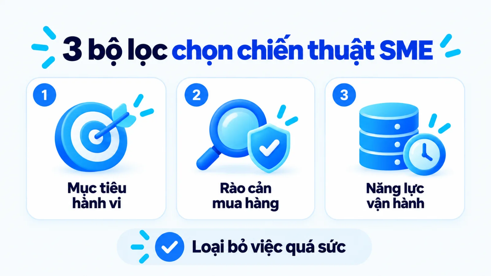
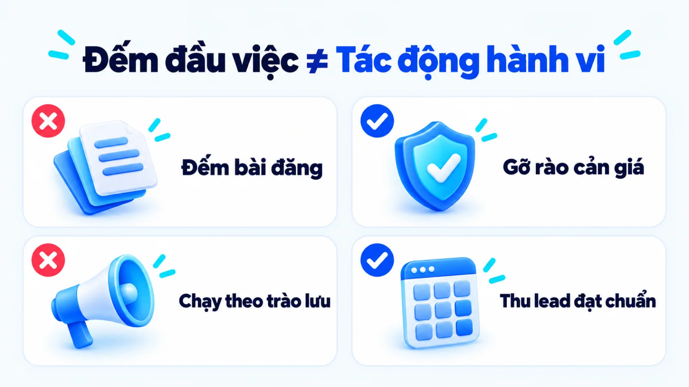
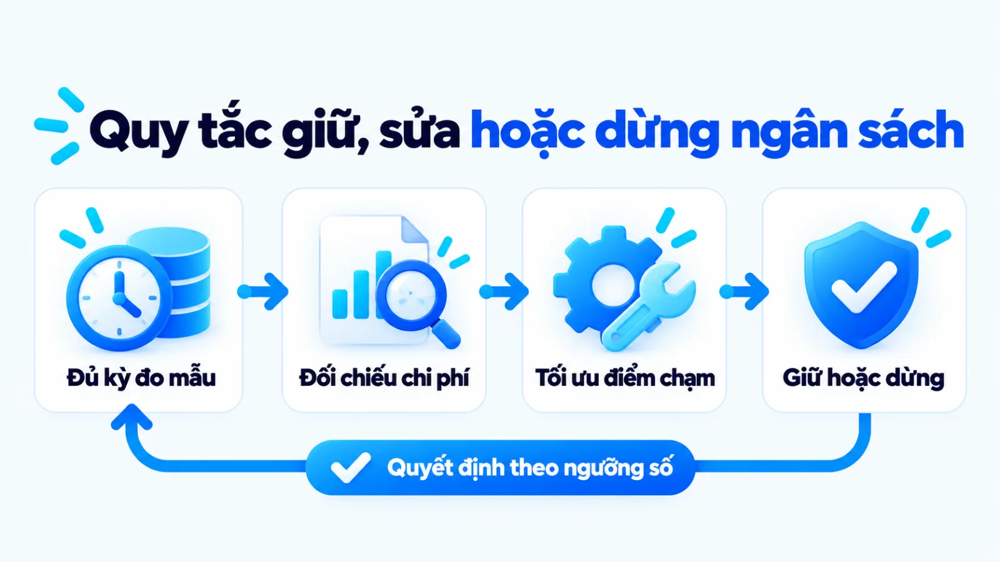
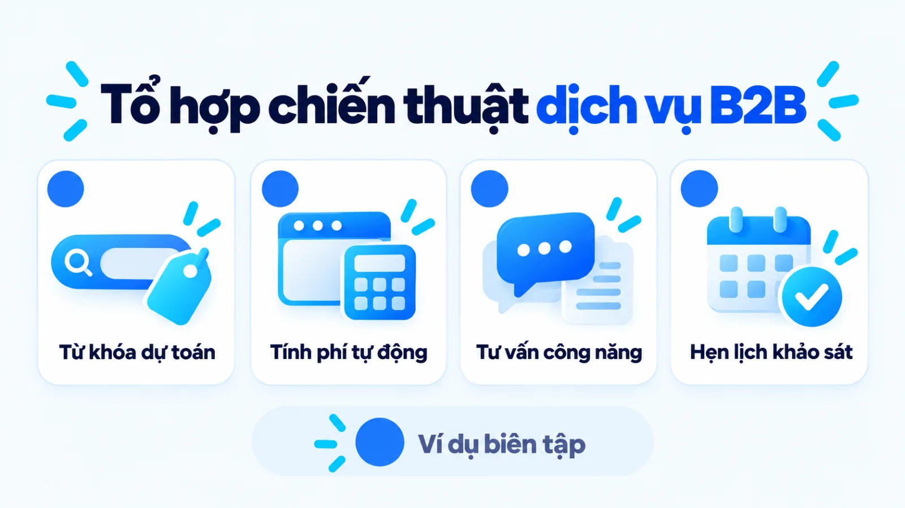

Chiến thuật marketing là gì, cách chọn cho SME
Chiến thuật marketing là những hành động triển khai cụ thể có mục tiêu hành vi rõ ràng và đầu ra đo lường được, dùng để hiện thực hóa các lựa chọn đã chốt trong chiến lược và chiến dịch marketing. Với doanh nghiệp vừa và nhỏ, việc chọn ngay một danh sách kênh hay công cụ đang thịnh hành khi chưa xác định hành vi khách hàng cần tác động thường làm ngân sách bị chia nhỏ mà không tạo ra đơn hàng ổn định. Vì vậy, người phụ trách cần đặt mỗi chiến thuật vào đúng mắt xích giữa mục tiêu kinh doanh, quy trình bán hàng và năng lực vận hành thực tế của đội ngũ trước khi giải ngân. Tôi là Lê Tuấn Việt, Marketing Leader tại TAKI Group. Trong bài viết này, tôi làm rõ ranh giới giữa chiến thuật với chiến lược, kế hoạch và chiến dịch, đồng thời hướng dẫn cách chọn tổ hợp thực thi vừa sức nguồn lực và kiểm soát hiệu quả qua ba tầng đo.
- Đăng ngày
- Cập nhật

Tóm tắt nhanh
- Chiến thuật marketing là hành động thực thi cụ thể nhằm tạo ra một hành vi mục tiêu của khách hàng, không phải là tên một kênh truyền thông hay một phần mềm vận hành.
- Doanh nghiệp vừa và nhỏ chỉ nên chọn chiến thuật sau khi đã khóa chặt ba yếu tố đầu vào gồm phân khúc ưu tiên, rào cản trên hành trình mua và trần nguồn lực thực tế.
- Một tổ hợp từ hai đến ba chiến thuật bổ trợ nhau trên cùng một phễu chuyển đổi giúp đội ngũ mỏng tích lũy đủ dữ liệu học máy tốt hơn việc rải ngân sách ra nhiều kênh rời rạc.
- Hiệu quả của mỗi chiến thuật cần được đọc cùng lúc trên cả ba tầng gồm tín hiệu tương tác, hành vi tiến trình đạt chuẩn và doanh thu đã xác nhận để chẩn đoán đúng điểm nghẽn.
Mục lục bài viết8 phần
Chiến thuật marketing là gì trong hệ thống
Chiến thuật marketing (marketing tactics) là các phương thức tác động cụ thể tại từng điểm chạm nhằm thúc đẩy khách hàng thực hiện một hành vi mục tiêu đã được quy định trong chiến lược và chiến dịch marketing. Thay vì trả lời doanh nghiệp phục vụ ai, chiến thuật giải quyết bài toán làm cách nào để người mua bước qua từng rào cản và đi tới quyết định mua.
Theo định nghĩa chính thức của American Marketing Association (AMA, Hiệp hội Marketing Hoa Kỳ), marketing là tập hợp các hoạt động, định chế và quy trình nhằm tạo ra, truyền thông, phân phối và trao đổi những giá trị cho khách hàng, đối tác cùng xã hội. Đặt trong hệ thống đó, chiến thuật không phải là mẹo vặt tách rời, mà là khâu hành động biến lời hứa giá trị thành giao dịch ngoài thị trường.

Nhiều SME (doanh nghiệp vừa và nhỏ) thường bắt đầu lập kế hoạch bằng câu hỏi tháng này nên làm video ngắn, chạy quảng cáo tìm kiếm hay gửi thư điện tử hàng loạt. Khi gom các hoạt động theo trào lưu mà thiếu trục định hướng, đội ngũ dễ rơi vào trạng thái bận rộn sản xuất nội dung mỗi ngày nhưng không giải thích được đầu việc đó đóng góp gì cho mục tiêu doanh thu. Làm nhiều đầu việc chưa phải là có hệ thống.
Đầu vào cần có trước khi chọn chiến thuật
Một chiến thuật chỉ có cơ sở triển khai khi bám sát chiến lược Digital Marketing và bài toán kinh doanh hiện tại. Theo hướng dẫn của U.S. Small Business Administration (SBA, Cơ quan Quản lý Doanh nghiệp Nhỏ Hoa Kỳ), kế hoạch marketing phải mô tả rõ cách thu hút và giữ chân khách hàng theo nhu cầu đặc thù của doanh nghiệp. Bốn dữ kiện đầu vào cần khóa trước khi chọn chiến thuật gồm:
- Phân khúc khách hàng ưu tiên: Nhóm người mua cụ thể đang có nhu cầu thực tế, biên lợi nhuận đủ tốt và rào cản ra quyết định đã được nhận diện rõ.
- Lời hứa giá trị cốt lõi: Lý do cụ thể khiến khách hàng chọn giải pháp của doanh nghiệp thay vì phương án thay thế từ đối thủ cạnh tranh trực tiếp.
- Hành vi mục tiêu cần tác động: Bước chuyển dịch cụ thể mà doanh nghiệp muốn người dùng thực hiện như để lại thông tin, đặt lịch hẹn hoặc dùng thử sản phẩm.
- Trần nguồn lực cho phép: Hạn mức ngân sách tiền mặt, quỹ thời gian của nhân sự nội bộ và dữ liệu khách hàng sẵn có trong kỳ triển khai tới.
Đầu ra của một chiến thuật có thể triển khai
Khác với ý tưởng chung chung như tăng hiện diện mạng xã hội, một chiến thuật đưa vào vận hành phải được đóng gói thành đơn vị công việc kiểm tra được. Bản mô tả cần chỉ rõ phương thức tác động, điểm chạm phân phối, người phụ trách, thời hạn bàn giao và chỉ số nghiệm thu. Thiếu các thành phần này, đề xuất chỉ dừng ở khẩu hiệu mà không thể chuyển thành lịch chạy hàng tuần.
Phân biệt chiến lược, chiến dịch và chiến thuật
Trong quản trị marketing, chiến lược, kế hoạch, chiến dịch và chiến thuật là bốn cấp độ quyết định nối tiếp nhau từ định hướng dài hạn xuống thao tác hàng ngày. Chiến lược chọn thị trường và lợi thế cạnh tranh, kế hoạch phân bổ nguồn lực theo kỳ, chiến dịch gom hoạt động vào một đợt tập trung có thời hạn, còn chiến thuật là từng hành động thực thi lẻ.
Sự nhầm lẫn giữa chiến dịch và chiến lược trong marketing thường khiến doanh nghiệp dùng chỉ số của một đợt khuyến mãi ngắn hạn để đánh giá toàn bộ hướng đi của thương hiệu, hoặc ngược lại, thay đổi định vị mỗi khi một mẫu quảng cáo lẻ có chi phí cao. Bảng dưới đây phân biệt bốn cấp độ quản trị theo ba tiêu chí gồm câu hỏi trọng tâm và phạm vi, đầu ra quản trị cùng dấu hiệu cần điều chỉnh.
| Cấp độ quản trị | Câu hỏi trọng tâm và phạm vi | Đầu ra và dấu hiệu cần sửa |
|---|---|---|
| Chiến lược | Doanh nghiệp phục vụ phân khúc nào, bằng giá trị gì để thắng trong khung 1 đến 3 năm | Khung định vị, vai trò kênh; chỉ sửa khi cấu trúc thị trường hoặc sản phẩm thay đổi lớn |
| Kế hoạch | Phân bổ ngân sách, nhân sự và lộ trình mục tiêu theo từng quý hoặc năm như thế nào | Bảng ngân sách, lịch trình và KPI (chỉ số đánh giá hiệu quả) theo kỳ; sửa khi lệch ngưỡng |
| Chiến dịch | Tổ chức đợt truyền thông từ 2 đến 12 tuần quanh một chủ đề để đạt mục tiêu ngắn hạn nào | Bản đề xuất chiến dịch, thông điệp chủ đạo, bộ ấn phẩm; tối ưu theo kết quả từng đợt chạy |
| Chiến thuật | Thực hiện hành động cụ thể nào tại điểm chạm để khách hàng thực hiện hành vi mục tiêu | Bài viết, nhóm quảng cáo, kịch bản thu thập thông tin; thay đổi linh hoạt theo dữ liệu tuần |
Giới hạn khi đọc bảng: khung thời gian của từng cấp độ chỉ mang tính tham chiếu cho mô hình kinh doanh tiêu chuẩn. Với các doanh nghiệp thương mại điện tử hoặc dịch vụ theo mùa vụ ngắn, chu kỳ kế hoạch và chiến dịch có thể co gọn lại theo nhịp luân chuyển hàng tồn kho và dòng tiền thực tế.

Ranh giới giữa chiến thuật, kênh và công cụ
Một ngộ nhận phổ biến khác là gọi thẳng tên kênh truyền thông hoặc phần mềm hỗ trợ là chiến thuật marketing. Thực tế, kênh (channel) là môi trường hoặc đường dẫn đưa thông điệp tới người nhận như công cụ tìm kiếm, mạng xã hội hay thư điện tử; công cụ (tool) là phần mềm giúp đội ngũ thiết kế, tự động hóa và đo lường; còn chiến thuật là cách thức phối hợp thông điệp với cơ chế kích hoạt hành vi trên kênh đó.
Trên cùng kênh Google, việc xây dựng cụm bài hướng dẫn chuyên sâu để thu hút người tự tìm hiểu giải pháp là một chiến thuật thuộc nhóm triển khai Content Marketing dài hạn. Ngược lại, việc đấu giá từ khóa thương mại kèm bảng giá để đón khách cần gọi ngay trong ngày là chiến thuật kích hoạt trực tiếp. Tách bạch ba khái niệm này giúp bạn không đổ lỗi cho cả kênh khi mới thử sai một chiến thuật.
Quan hệ từ mục tiêu kinh doanh đến thực thi
Mạch liên kết dọc đi từ mục tiêu doanh thu qua chiến lược và kế hoạch kỳ để hình thành chiến dịch trọng điểm. Trên nền tảng quảng cáo, Google Ads Help định nghĩa chiến dịch là tập hợp các nhóm quảng cáo dùng chung ngân sách, mục tiêu vị trí và thiết lập phân phối cho một mục tiêu cụ thể. Mở rộng ra, mỗi chiến dịch gom nhiều chiến thuật cùng phục vụ một thông điệp.
Khi mạch liên kết này bị đứt, bộ phận hoạch định thường giao xuống những mục tiêu doanh số trừu tượng, còn nhân sự thực thi lại báo cáo lên bằng số lượng bài đăng hoặc lượt hiển thị rời rạc. Mỗi chiến thuật được chọn phải chỉ rõ nó đang gánh phần việc nào của chiến dịch và chuyển giao kết quả gì cho bước bán hàng kế tiếp.
Cách chọn chiến thuật theo mục tiêu và nguồn lực
Doanh nghiệp vừa và nhỏ nên chọn chiến thuật marketing bằng cách đi qua ba bộ lọc tuần tự gồm hành vi khách hàng cần tác động theo mục tiêu kinh doanh, giai đoạn hiện tại trong hành trình mua và độ sẵn sàng thực tế về dữ liệu, ngân sách cùng nhân sự vận hành. Bốn tiêu chí trong bảng dưới đây giúp người phụ trách chọn tổ hợp chiến thuật khớp với quy mô nguồn lực.
| Tình huống nguồn lực | Nhóm chiến thuật nên ưu tiên | Điều kiện áp dụng và đánh đổi |
|---|---|---|
| Ngân sách hẹp, cần đơn sớm | Tối ưu trang đích chốt đơn, chạy tìm kiếm từ khóa ý định mua cao và khai thác tệp khách cũ | Sản phẩm có sẵn nhu cầu tìm kiếm; đánh đổi là quy mô tệp hẹp và chi phí đấu giá cạnh tranh |
| Ngân sách hẹp, chu kỳ dài | Bài viết giải quyết vấn đề chuyên sâu, biểu mẫu nhận tài liệu chuyên môn và chăm sóc qua Zalo, email | Đội ngũ có chuyên môn viết sâu; đánh đổi là mất 3 đến 6 tháng mới tạo dòng khách hàng ổn định |
| Có ngân sách, thiếu dữ liệu | Chiến thuật thử nghiệm nhiều góc thông điệp trả phí quy mô nhỏ kết hợp khảo sát ngắn trên trang | Có người đọc số hàng tuần; chấp nhận tốn chi phí ban đầu để mua dữ liệu phản hồi thực tế |
| Đã có phễu chuyển đổi chuẩn | Kết hợp nội dung SEO cụm chủ đề, tiếp thị lại đa điểm chạm và chương trình giới thiệu từ khách cũ | Tỷ lệ chốt đơn tại trang đích đã ổn định; đòi hỏi quy trình phối hợp chặt giữa marketing và sale |
Giới hạn khi đọc bảng: thứ tự ưu tiên trên cần dịch chuyển theo độ trưởng thành dữ liệu. Sai lầm phổ biến ở SME là thấy ngân sách hẹp nên chỉ làm kênh tự nhiên miễn phí dù đang cần dòng tiền ngay trong tháng. Khi chưa kiểm chứng sức mua, một khoản ngân sách trả phí nhỏ có kiểm soát đưa khách vào trang đích sẽ giúp xác thực thông điệp nhanh hơn.

Mục tiêu kinh doanh và hành vi cần tác động
Hướng dẫn của SBA nhấn mạnh kế hoạch marketing không tách rời bán hàng và tài chính, mà phải chỉ rõ một giao dịch thực tế diễn ra thế nào. Vì vậy, bộ lọc đầu tiên khi chọn chiến thuật không phải độ phủ của kênh, mà là hành vi nào đẩy giao dịch tiến gần bước thanh toán. Nếu khách thoát trang sản phẩm vì thiếu niềm tin, chiến thuật đúng là thêm bằng chứng và bảng so sánh thay vì mua thêm hiển thị.
Khách hàng cùng giai đoạn hành trình mua
Mỗi giai đoạn trong hành trình mua đòi hỏi một cơ chế tác động khác nhau. Khi người mua mới nhận diện vấn đề, chiến thuật phù hợp là dùng bài phân tích nguyên nhân và chọn content angle (góc tiếp cận nội dung) chạm đúng nỗi đau vận hành để giúp họ gọi tên bài toán. Khi khách sang bước cân nhắc nhà cung cấp, chiến thuật cần chuyển sang mẫu thử, buổi chẩn đoán hoặc khung tính chi phí.
Dữ liệu, ngân sách và năng lực vận hành
Tôi luôn hỏi ai sẽ vận hành chiến thuật này mỗi ngày trước khi duyệt phương án mới. Chiến thuật nuôi dưỡng khách tiềm năng qua chuỗi thư tự động nghe bài bản, nhưng nếu chưa thu thập được zero-party data và first-party data (dữ liệu khách tự khai báo và dữ liệu hành vi trên kênh sở hữu) hoặc thiếu người viết bài định kỳ, hệ thống sẽ sớm bỏ trống. Chọn việc vượt sức đội ngũ luôn gây lãng phí.
Quy trình chuyển chiến lược thành chiến thuật
Để tránh tình trạng chiến lược nằm trên bản trình chiếu còn nhân sự bên dưới tự chạy theo thói quen cũ, doanh nghiệp cần một quy trình dịch chuyển có kiểm soát. Quy trình chuyển hóa từ chiến lược sang chiến thuật marketing có thể đo lường gồm bốn bước tuần tự từ chốt mục tiêu, xác định hành vi đích, phân công tổ hợp thực thi đến thiết lập ngưỡng đọc số.
Bước 1: Chốt lựa chọn chiến lược và mục tiêu
Rà soát lại tài liệu chiến lược hiện hành để trích xuất đúng phân khúc khách hàng mục tiêu, thông điệp giá trị cốt lõi và con số doanh thu hoặc số lượng khách hàng cần đạt trong quý. Ở bước này, người phụ trách marketing phải ngồi cùng bộ phận bán hàng để thống nhất định nghĩa thế nào là một khách hàng tiềm năng đủ điều kiện tư vấn và quy trình chuyển giao thông tin diễn ra như thế nào.
Đầu vào: tài liệu chiến lược và mục tiêu doanh thu quý; Đầu ra: bản tóm tắt mục tiêu kèm mô tả luồng giao dịch; Dấu hiệu hoàn tất: trưởng nhóm marketing và bán hàng ký chốt định nghĩa khách hàng tiềm năng đạt chuẩn.
Bước 2: Xác định hành vi và đối tượng tác động
Phân tích dữ liệu lịch sử hoặc phỏng vấn nhóm khách hàng gần nhất để tìm rào cản khiến họ ngần ngại chưa mua. Từ rào cản đó, hãy viết tuyên bố hành vi mục tiêu thay vì giao việc theo định dạng. Thay vì giao đăng bài hàng tuần, hãy chốt hành động cụ thể như dùng bảng tính chi phí trên trang đích để thu thông tin (ví dụ biên tập, không phải kết quả khách hàng thật).
Đầu vào: dữ liệu lịch sử mua hàng và ghi chép phỏng vấn khách hàng; Đầu ra: bảng ghép cặp từng nhóm đối tượng ưu tiên với rào cản tâm lý và hành vi mục tiêu; Dấu hiệu hoàn tất: mỗi phân khúc đều có tuyên bố hành vi đích rõ để đo.

Bước 3: Chọn chiến thuật, kênh và người phụ trách
Dựa trên hành vi mục tiêu đã chốt, hãy chọn hai đến ba chiến thuật nối tiếp nhau gồm thu hút người có nhu cầu, chuyển đổi thành thông tin liên hệ và bám đuổi người chưa chốt đơn. Mỗi chiến thuật cần gắn với một kênh cụ thể, thống nhất brand voice và tone of voice (giọng thương hiệu và sắc thái biểu đạt), đồng thời chỉ định người phụ trách chính kèm trần ngân sách.
Đầu vào: tuyên bố hành vi mục tiêu và trần nguồn lực kỳ tới; Đầu ra: bảng phân công ghi rõ tên đầu việc, kênh chạy, ngân sách trần và thời hạn; Dấu hiệu hoàn tất: từng chiến thuật đều có người phụ trách và lịch chạy hàng tuần.
Bước 4: Đặt chỉ số, kỳ đo và ngưỡng điều chỉnh
Thiết lập các sự kiện theo dõi trên website cùng bảng quản trị khách hàng trước khi bấm nút khởi chạy bất kỳ hoạt động nào. Người quản lý cần quy định trước cỡ mẫu tối thiểu và khoảng thời gian thử nghiệm để nhân sự không tắt chiến thuật quá sớm chỉ sau vài ngày biến động, đồng thời đặt sẵn ngưỡng chi phí tối đa mà nếu vượt qua thì bắt buộc phải dừng để mổ xẻ nguyên nhân.
Đầu vào: danh sách sự kiện đo lường trên website và biên lợi nhuận cho phép; Đầu ra: biên bản quy tắc đọc số nêu rõ ngưỡng giữ, sửa hoặc dừng ngân sách; Dấu hiệu hoàn tất: hệ thống ghi nhận đúng sự kiện thử nghiệm trước ngày khởi chạy.

Ví dụ chọn chiến thuật marketing cho SME
Một doanh nghiệp vừa và nhỏ hoàn toàn có thể đi từ mục tiêu doanh thu cụ thể, đóng gói thành chiến dịch theo quý rồi triển khai bằng tổ hợp hai đến ba chiến thuật bổ trợ nhau thay vì dàn trải nhiều kênh. Dưới đây là ví dụ biên tập, không phải kết quả khách hàng thật, minh họa cách một đơn vị thiết kế nội thất văn phòng tại Hà Nội chọn chiến thuật trong quý.
Ví dụ biên tập, không phải kết quả khách hàng thật
Tổ hợp ba chiến thuật cho dịch vụ thiết kế văn phòng B2B (doanh nghiệp với doanh nghiệp) trong ví dụ biên tập
Thay vì chia đều ngân sách cho năm kênh mạng xã hội để đăng ảnh phối cảnh chung chung, doanh nghiệp trong ví dụ biên tập này tập trung vào phân khúc công ty công nghệ từ 30 đến 80 nhân sự đang cần chuyển văn phòng trong quý tới. Mục tiêu của chiến dịch 90 ngày là thu về các yêu cầu khảo sát mặt bằng thực tế thông qua tổ hợp ba chiến thuật gắn kết chặt chẽ.
- Chiến thuật 01
- Đấu giá từ khóa dự toán chi phí thi công văn phòng theo quy mô diện tích
- Chiến thuật 02
- Mở trang đích có bảng tính dự toán chi phí tự động để thu thông tin mặt bằng
- Chiến thuật 03
- Chuỗi nội dung phân tích lỗi phong thủy và công năng gửi qua Zalo, email cho người đã tải bảng tính

Từ mục tiêu kinh doanh đến chiến dịch trọng tâm
Trong ví dụ biên tập này, rào cản lớn nhất khiến khách doanh nghiệp trì hoãn liên hệ là sợ phát sinh chi phí ẩn khi thi công. Vì vậy, chiến lược định vị của đơn vị là minh bạch hóa định mức vật tư ngay từ khâu tư vấn đầu. Từ đó, phòng marketing đóng gói chiến dịch một quý về kiểm soát ngân sách chuyển văn phòng để quảng cáo và tư vấn nói cùng một ngôn ngữ.
Từ chiến dịch đến tổ hợp chiến thuật và cách đo
Với hai nhân sự marketing, đơn vị trong ví dụ biên tập từ chối làm video giải trí hàng ngày và dồn lực vào ba chiến thuật trên. Chiến thuật đầu kéo người đang tính ngân sách vào trang đích; chiến thuật hai chuyển truy cập thành số điện thoại kèm diện tích mặt bằng; còn chiến thuật ba giữ nhịp tương tác trong thời gian chờ ban giám đốc khách hàng duyệt vốn.
Ở dự án cố vấn Marketing cho Hệ thống Y Đa khoa TOMEC (tháng 8/2025 đến tháng 8/2026) do tôi phụ trách, việc tối ưu tổ hợp thực thi đã giúp tăng 40% khách hàng tiềm năng và giảm 54% CPL (chi phí trên một khách hàng tiềm năng), từ 1,2 triệu xuống 550.000 đồng mỗi data. Kết quả này cho thấy độ khớp giữa thông điệp và điểm chạm chuyển đổi quan trọng hơn số lượng đầu việc.
Cách đo và chẩn đoán một chiến thuật marketing
Để tránh sai lầm đánh đồng lượt xem bài viết với hiệu quả doanh thu, mỗi chiến thuật marketing cần được theo dõi trên khung đo lường ba tầng gồm tín hiệu tương tác bề mặt, hành vi tiến trình đạt chuẩn và kết quả kinh doanh đã xác nhận. Bảng dưới đây phân tách ba tầng chỉ số thu thập từ GA4 (Google Analytics 4, công cụ phân tích website) và hệ thống bán hàng kèm giới hạn đọc số.
| Tầng đo lường | Chỉ số và nguồn dữ liệu chính | Vai trò và giới hạn khi đọc số |
|---|---|---|
| Tầng 1: Tương tác | CTR (tỷ lệ nhấp), thời gian đọc trang, lượt xem video trên kênh và dữ liệu sự kiện từ công cụ GA4 | Cho biết thông điệp có thu hút đúng sự chú ý không, nhưng chưa phản ánh ý định mua hay doanh thu |
| Tầng 2: Hành vi chuẩn | Lượt tải bảng giá, mở bảng tính chi phí, gửi biểu mẫu hợp lệ ghi nhận qua GA4 và phần mềm quản trị | Đo mức độ tiến triển thực chất trên phễu mua hàng; cần lọc bỏ thông tin rác trước khi tính chi phí |
| Tầng 3: Doanh thu | Số lịch hẹn tư vấn thực tế, tỷ lệ chốt đơn, doanh thu thuần và chi phí trên mỗi đơn hàng thực nhận | Xác nhận hiệu quả kinh tế cuối cùng; có độ trễ theo chu kỳ bán hàng và phụ thuộc kỹ năng tư vấn |
Giới hạn khi đọc bảng: chỉ số tầng ba luôn có độ trễ so với lúc chiến thuật bắt đầu phân phối. Với sản phẩm có chu kỳ cân nhắc vài tháng, người quản lý không thể dùng doanh thu tuần đầu để kết luận chiến thuật nội dung thất bại, mà cần quan sát sự dịch chuyển tuần tự từ tầng một sang tầng hai trước.
Tín hiệu tương tác trên các điểm chạm
Chỉ số tầng tương tác đóng vai trò cảnh báo kỹ thuật sớm trong những ngày đầu khởi chạy. Khi tỷ lệ nhấp quá thấp hoặc người dùng thoát trang đích ngay vài giây đầu, dữ liệu báo hiệu thông điệp đang lệch kỳ vọng hoặc trang tải chậm trên điện thoại. Tuy nhiên, bài đăng nhiều lượt thích vẫn không tạo ra doanh thu nếu người xem nằm ngoài khu vực doanh nghiệp phục vụ.
Lead hoặc hành vi đạt chuẩn trên đường mua
Để nối khoảng trống giữa lượt xem và đơn hàng, đội ngũ cần theo dõi micro conversion (chuyển đổi vi mô) trong hệ đo lường. Theo Nielsen Norman Group, chuyển đổi vi mô gồm hai nhóm là các mốc tiến trình dẫn thẳng tới chuyển đổi chính và các hành động phụ thể hiện mức quan tâm. Đếm số người đi qua mốc tiến trình và ghi vào CRM (hệ thống quản trị quan hệ khách hàng) sẽ phản ánh hiệu quả sát hơn tổng lượt truy cập.
Kết quả kinh doanh đã xác nhận và quy kết
Ở tầng cuối, dữ liệu bán hàng xác nhận khách tiềm năng có chuyển thành hợp đồng sinh lời không. Theo Google Analytics Help, quy kết (attribution) là việc gán mức đóng góp của quảng cáo, lượt nhấp và điểm chạm dẫn tới hành động quan trọng. Thực tế, khách thường đọc bài, chia sẻ qua các kênh trò chuyện riêng tư thuộc vùng giới hạn quy kết từ dark social (nguồn chia sẻ ẩn không để lại dữ liệu tham chiếu) cho đồng nghiệp rồi mới mua hàng.
Nếu chỉ nhìn vào mô hình quy kết lượt nhấp cuối cùng, doanh nghiệp rất dễ cắt nhầm các chiến thuật nội dung đang đóng vai trò tạo niềm tin ở đầu phễu. Khi đối chiếu chéo số liệu giữa các tầng, người phụ trách có thể khoanh vùng điểm nghẽn qua bốn tình huống lệch số điển hình dưới đây:
- Nhiều lượt nhấp, ít hành vi đích: Góc thông điệp quảng cáo đang hứa hẹn quá rộng hoặc lệch với nội dung trang đích khiến người xem thoát trang sớm.
- Có hành vi đích, thiếu đơn hàng: Chiến thuật đang thu hút tệp người xem chưa đủ ngân sách chi trả hoặc bộ phận bán hàng phản hồi thông tin quá chậm.
- Ra đơn hàng nhưng chi phí vượt trần: Giá đấu thầu kênh đang quá cao so với giá trị đơn hàng trung bình và cần bổ sung kịch bản chăm sóc khách mua lặp lại.
- Cả ba tầng chỉ số đều thấp: Giả thuyết về rào cản mua hàng hoặc cách ghép chiến thuật với kênh tiếp cận đang sai nên cần dừng lại để chọn hướng khác.
Câu hỏi thường gặp về chiến thuật marketing
Doanh nghiệp nhỏ có nên chạy nhiều chiến thuật cùng lúc không?
Không, doanh nghiệp vừa và nhỏ không nên dàn trải nhiều chiến thuật cùng lúc khi ngân sách và nhân sự còn mỏng. Mỗi chiến thuật đều cần đủ thời gian, tần suất hiển thị và cỡ mẫu dữ liệu để vượt qua ngưỡng học máy của nền tảng. Đội ngũ chỉ nên tập trung vào hai đến ba chiến thuật bổ trợ nhau trên cùng một phễu cho tới khi đo được chi phí ổn định.
Khi nào doanh nghiệp nên dừng hoặc thay một chiến thuật?
Doanh nghiệp nên dừng hoặc thay thế khi chiến thuật đã chạy đủ chu kỳ thử nghiệm và đủ cỡ mẫu tương tác nhưng không tạo ra hành vi tiến trình hoặc chi phí vượt trần biên lợi nhuận. Trước khi cắt bỏ, người phụ trách cần tách bạch xem lỗi nằm ở việc chọn sai chiến thuật hay ở khâu nhắm mục tiêu và trang đích. Nếu vẫn có khách tiềm năng đúng chân dung nhưng không ra đơn, điểm cần sửa nằm ở khâu bán hàng.
Vì sao chiến thuật có nhiều tương tác nhưng không ra đơn?
Hiện tượng nhiều tương tác nhưng thiếu đơn hàng thường xảy ra khi chiến thuật chỉ kích hoạt hành động giải trí, tò mò thay vì dẫn người dùng đi qua các mốc tiến trình mua hàng. Một nguyên nhân khác là góc nội dung quá rộng, kéo về tệp người xem không có nhu cầu hoặc khả năng chi trả. Để khắc phục, đội ngũ cần lọc nhu cầu ngay trong thông điệp và đo các chuyển đổi vi mô gắn với yêu cầu báo giá.
Bao lâu nên đánh giá lại hiệu quả của một chiến thuật?
Chu kỳ đánh giá một chiến thuật phụ thuộc trực tiếp vào cơ chế tích lũy của phương thức đó và độ dài chu kỳ mua hàng. Các chiến thuật trả phí ngắn hạn cần được kiểm tra tín hiệu tương tác hàng tuần và kết luận hiệu quả chuyển đổi theo chu kỳ tháng. Ngược lại, các chiến thuật tích lũy tự nhiên như nội dung chuẩn tìm kiếm cần theo dõi tiến trình hàng tháng và đánh giá doanh thu theo quý.
Giữ nguyên chiến lược thì có cần đổi chiến thuật không?
Có, chiến thuật marketing cần được điều chỉnh linh hoạt ngay cả khi định hướng chiến lược nhiều năm vẫn giữ nguyên. Khi chi phí đấu giá kênh tăng cao, hành vi người mua dịch chuyển hoặc đối thủ làm bão hòa định dạng nội dung, doanh nghiệp phải đổi cách tiếp cận để bảo vệ hiệu suất. Miễn là chiến thuật mới vẫn phục vụ đúng phân khúc và lời hứa giá trị đã chốt, hệ thống sẽ thích nghi mà không lệch định vị.
Nên ưu tiên chiến thuật ngắn hạn hay tích lũy dài hạn?
Thứ tự ưu tiên phụ thuộc vào áp lực dòng tiền hiện tại cùng độ hoàn thiện của hạ tầng chuyển đổi trong doanh nghiệp. Khi cần dòng tiền quay vòng nhanh hoặc cần kiểm chứng mức giá và thông điệp mới, doanh nghiệp nên ưu tiên chiến thuật kích hoạt nhu cầu có sẵn kèm trang đích chốt đơn rõ ràng. Khi tỷ lệ chuyển đổi đã ổn định, người phụ trách cần trích dần nguồn lực sang tích lũy nội dung và dữ liệu khách hàng.
Kết luận
Một chiến thuật marketing chỉ thực sự tạo ra giá trị khi được đặt đúng vào chuỗi quyết định từ mục tiêu kinh doanh, lựa chọn chiến lược và chiến dịch xuống tới từng hành vi tiến trình trên đường mua hàng. Thay vì gom góp các kênh và công cụ đang thịnh hành, ranh giới phân định hiệu quả nằm ở việc đội ngũ biết rõ mỗi đầu việc đang tháo gỡ rào cản nào cho phân khúc ưu tiên và được nghiệm thu bằng chỉ số ở tầng nào.
Ngay trong tuần này, bạn có thể mở danh sách các hoạt động marketing đang chạy, gắn mỗi đầu việc với một hành vi mục tiêu ở tầng hai và tạm dừng những việc chỉ tạo hiển thị bề mặt mà không có người theo dõi chuyển đổi. Bạn cũng có thể xem thêm các bài viết cùng trục tại chuyên mục Marketing để hoàn thiện từng mắt xích trong phễu.
Khi doanh nghiệp đã thử nghiệm từng chiến thuật lẻ nhưng doanh thu vẫn trồi sụt do thiếu ăn khớp giữa định vị, ngân sách kênh và quy trình chốt đơn, việc sửa từng mẫu quảng cáo sẽ không giải quyết được gốc rễ. Lúc này, doanh nghiệp cần một khung hoạch định tổng thể và hệ thống đo lường đồng bộ từ marketing tới doanh thu.
Trong các hoạt động mà đội ngũ của bạn đang duy trì mỗi tuần, đâu là chiến thuật thực sự mang về khách hàng đạt chuẩn và đâu là đầu việc chỉ đang làm tiêu hao thời gian vận hành?